elevation_2014_09_04@timeseries
Statistics
| Min | 105.485801696777 |
| Max | 111.358596801758 |
| Mean | 108.411733698228 |
| Variance | 1.29265923207449 |
Map
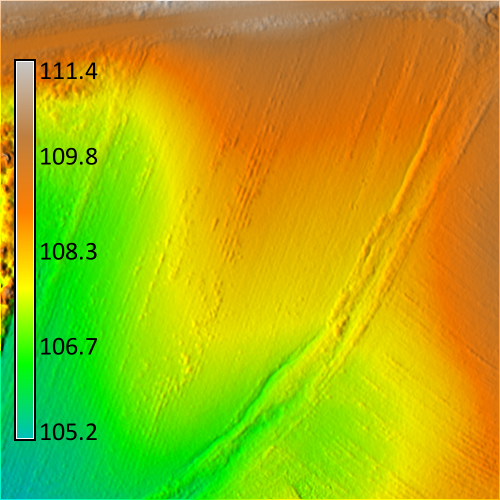
elevation_2015_06_20@timeseries
Statistics
| Min | 105.341751098633 |
| Max | 112.006950378418 |
| Mean | 108.82454982933 |
| Variance | 1.60709363068526 |
Map
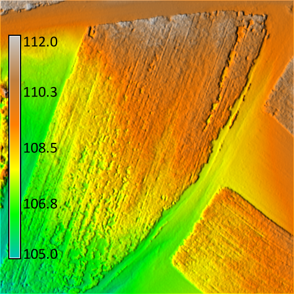
elevation_2015_07_10@timeseries
Statistics
| Min | 104.721343994141 |
| Max | 112.268745422363 |
| Mean | 108.666753304181 |
| Variance | 2.56497696561505 |
Map
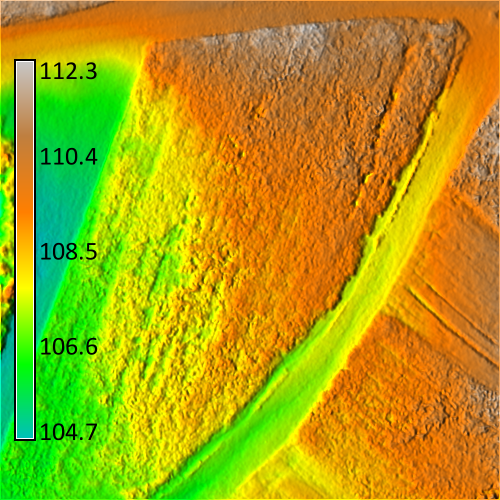
elevation_2015_10_06@timeseries
Statistics
| Min | 105.424980163574 |
| Max | 110.993270874023 |
| Mean | 108.405709239817 |
| Variance | 1.44892764688121 |
Map
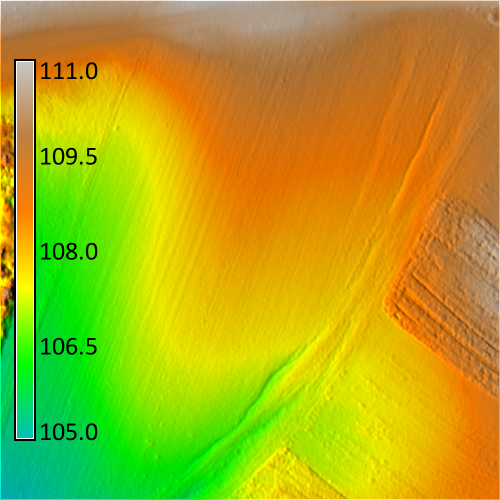
slope_2014_09_04@timeseries
Statistics
| Min | 0.00696635479107499 |
| Max | 80.959098815918 |
| Mean | 5.88666862139301 |
| Variance | 39.0083441199395 |
Map
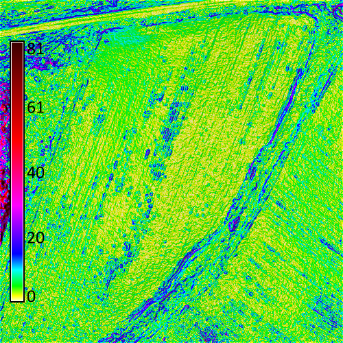
slope_2015_06_20@timeseries
Statistics
| Min | 0.00650529004633427 |
| Max | 83.1467514038086 |
| Mean | 12.858786573049 |
| Variance | 139.517574361037 |
Map
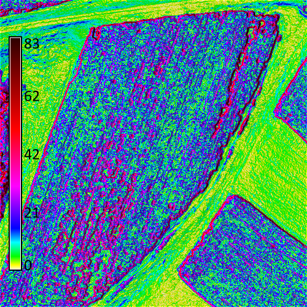
slope_2015_07_10@timeseries
Statistics
| Min | 0.0189635418355465 |
| Max | 79.9057693481445 |
| Mean | 16.9820207489801 |
| Variance | 159.852177284589 |
Map
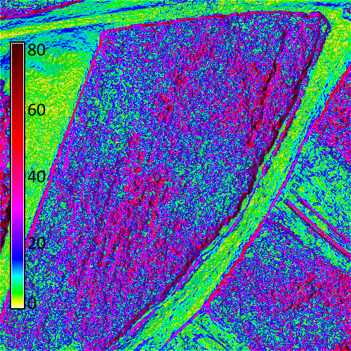
slope_2015_10_06@timeseries
Statistics
| Min | 0.0142444055527449 |
| Max | 80.0944747924805 |
| Mean | 5.3205903610218 |
| Variance | 41.493409719532 |
Map
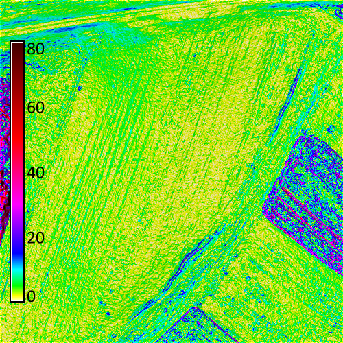
aspect_2014_09_04@timeseries
Statistics
| Min | 0 |
| Max | 360 |
| Mean | 217.848556125101 |
| Variance | 7030.86550605235 |
Map
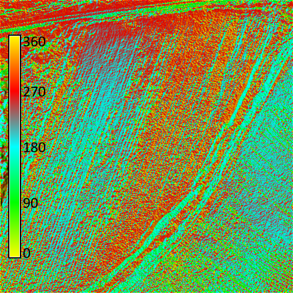
aspect_2015_06_20@timeseries
Statistics
| Min | 0 |
| Max | 360 |
| Mean | 204.403635847127 |
| Variance | 8661.99825328004 |
Map
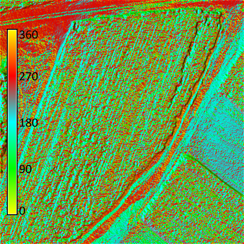
aspect_2015_07_10@timeseries
Statistics
| Min | 0 |
| Max | 360 |
| Mean | 195.637567786559 |
| Variance | 9265.65683845072 |
Map
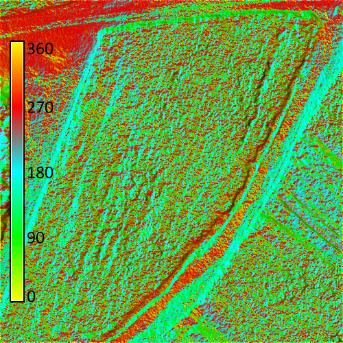
aspect_2015_10_06@timeseries
Statistics
| Min | 0 |
| Max | 360 |
| Mean | 225.343114264996 |
| Variance | 6032.18390583426 |
Map
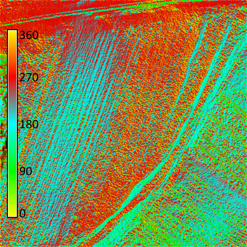
pca_2014_09_04@timeseries
Statistics
| Min | 101 |
| Max | 32369 |
| Mean | 6969.16267213627 |
| Variance | 24112828.1093034 |
Map
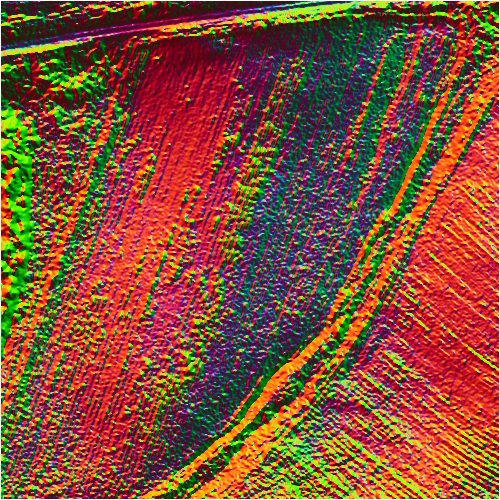
pca_2015_06_20@timeseries
Statistics
| Min | 10 |
| Max | 32369 |
| Mean | 3774.08221088106 |
| Variance | 15697978.5911343 |
Map
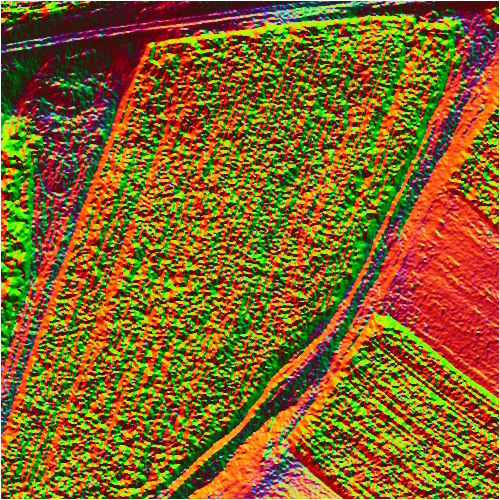
pca_2015_07_10@timeseries
Statistics
| Min | 10 |
| Max | 32368 |
| Mean | 2618.61748333818 |
| Variance | 10109960.5560508 |
Map
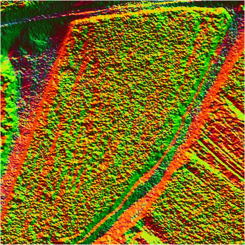
pca_2015_10_06@timeseries
Statistics
| Min | 13 |
| Max | 32369 |
| Mean | 7551.45025140778 |
| Variance | 26546448.6553763 |
Map
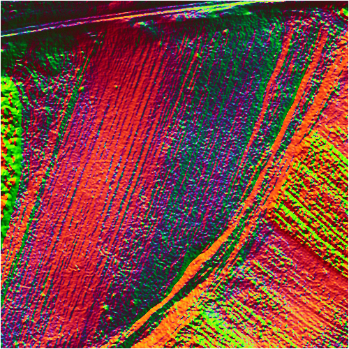
depth_2014_09_04@timeseries
Statistics
| Min | 0.000293225719360635 |
| Max | 0.354239642620087 |
| Mean | 0.026352099905706 |
| Variance | 0.0010475848213792 |
Map
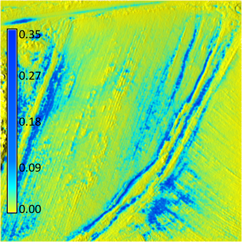
depth_2015_06_20@timeseries
Statistics
| Min | 0.000229243189096451 |
| Max | 0.380763381719589 |
| Mean | 0.0249538384653928 |
| Variance | 0.00147827564323774 |
Map
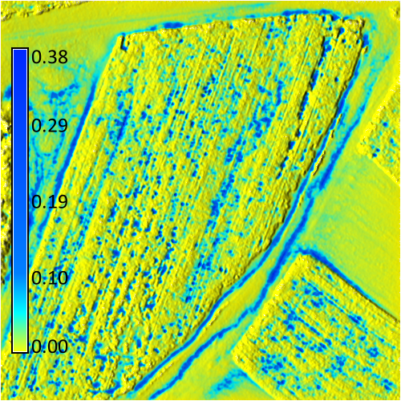
depth_2015_07_10@timeseries
Statistics
| Min | 0.000209566991543397 |
| Max | 0.408804327249527 |
| Mean | 0.0243604812315578 |
| Variance | 0.00161516918311086 |
Map
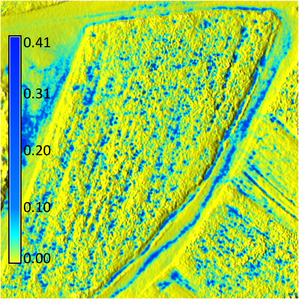
depth_2015_10_06@timeseries
Statistics
| Min | 0.000304328743368387 |
| Max | 0.345139592885971 |
| Mean | 0.0263922004558833 |
| Variance | 0.00102300141441638 |
Map
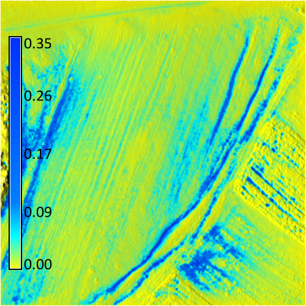
stddev@timeseries
Statistics
| Min | 0.00322495147581707 |
| Max | 1.45722012481122 |
| Mean | 0.397350997290553 |
| Variance | 0.03263953079206 |
Map
variance@timeseries
Statistics
| Min | 1.04003120213747e-005 |
| Max | 2.12349049215482 |
| Mean | 0.190527345839857 |
| Variance | 0.0232231103235799 |
Map
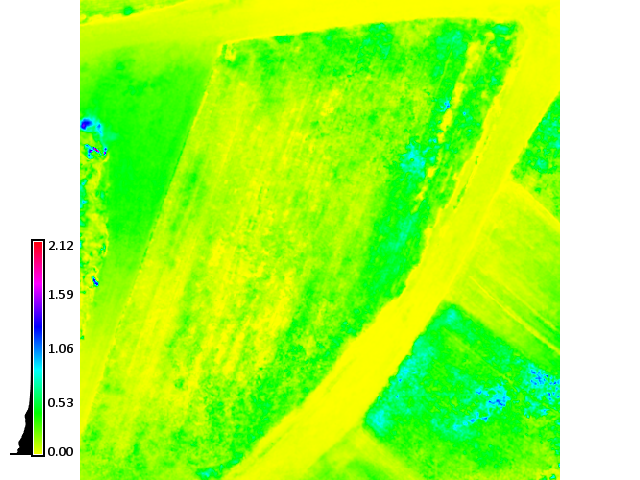
coeff@timeseries
Statistics
| Min | 0.00296421511420126 |
| Max | 1.33821089093196 |
| Mean | 0.366069092741749 |
| Variance | 0.0276847717956425 |
Map
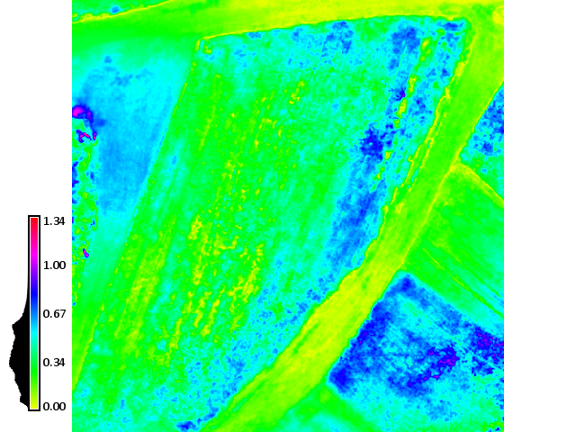